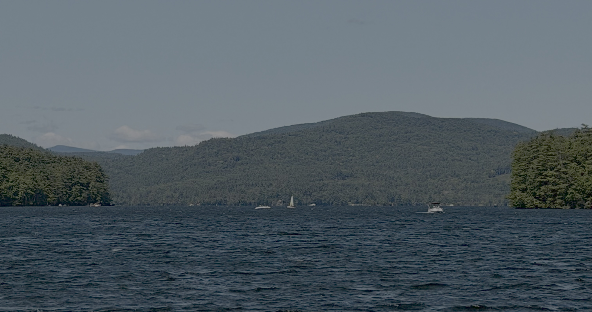
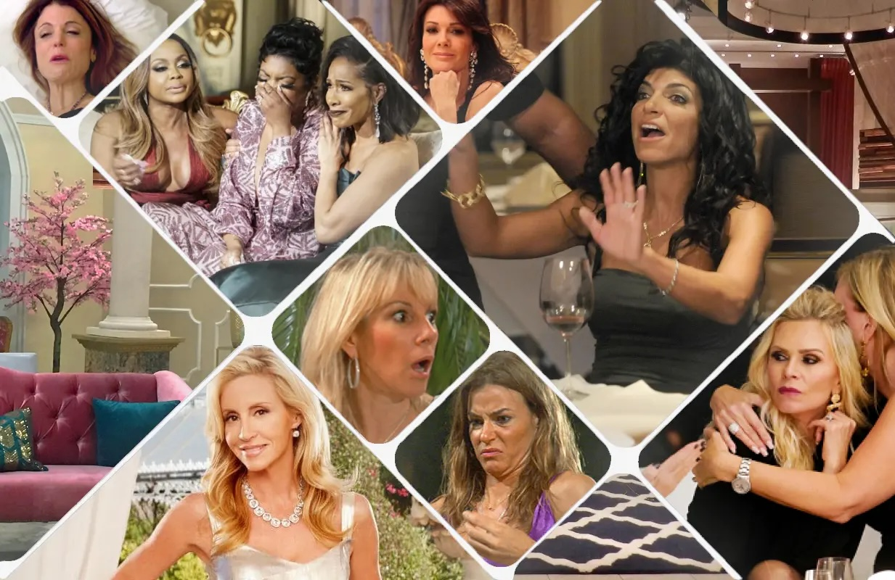
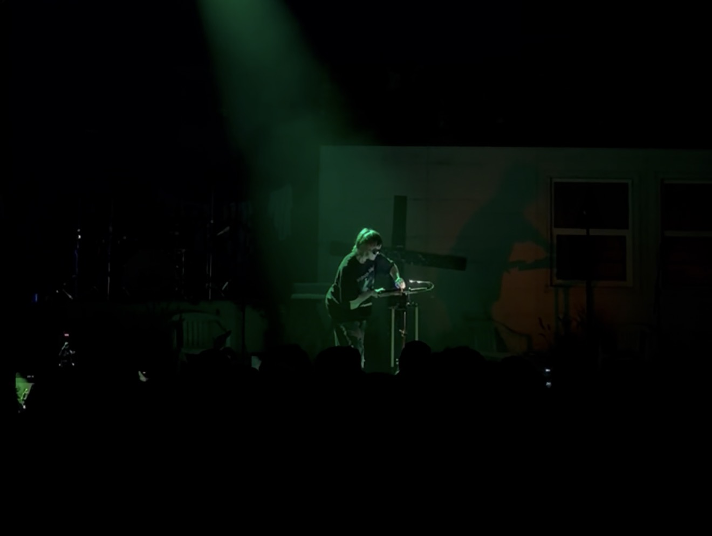
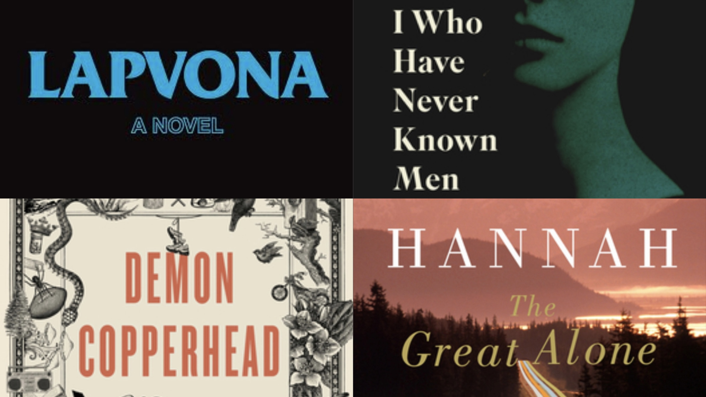

Exercise
Running is one of my favorite things to do, makes me feel free and is very therapeutic to me, I've done it for a decade now. Not only running but swimming, hiking, biking, and lifting.
A few things that take up most of my free time.

Running is one of my favorite things to do, makes me feel free and is very therapeutic to me, I've done it for a decade now. Not only running but swimming, hiking, biking, and lifting.

For some people screen-time is a waste of time but for me the art of movies, television, youtube, music, reality TV, all play a significant role in my interests.

Exploring restaurants, going to bars, going dancing, getting to see my favorite performers all with my best-friends.

A few years ago I got into reading and it gave me my new favorite hobby. Last year I read 50 books. I love to escape.